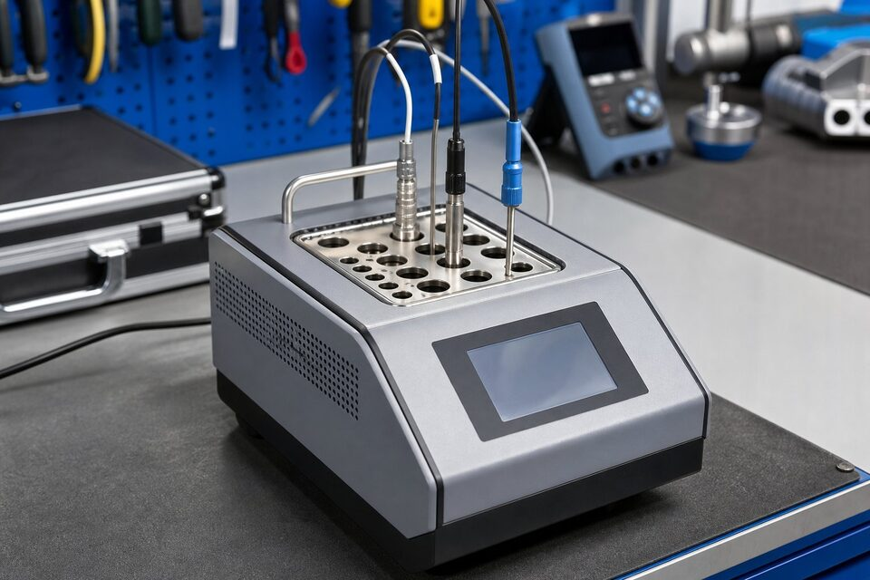

چرا کالیبراسیون دما اهمیت دارد؟
دما یکی از پرتکرارترین کمیتهای اندازهگیری در صنعت است و بسیاری تصمیمهای فرایندی و ایمنی به آن وابستهاند. اما سنسورهای دما ذاتا با زمان دریفت میکنند: سنسورهای مقاومتی بر اثر تنشهای مکانیکی و حرارتی، و ترموکوپلها بر اثر تغییرات ساختار سیم در دماهای بالا. اگر این دریفت پایش نشود، خوانشها به تدریج از واقعیت فاصله میگیرند و کنترل فرایند بر مبنای داده نادرست انجام میشود. کالیبراسیون دورهای، این انحراف را اندازهگیری، مستند و تصحیح میکند.

روشها: حمام، بلوک خشک و کوره
سه روش اصلی برای ایجاد دمای مرجع وجود دارد. حمام مایع با همزدن و پایداری عالی، دقیقترین گزینه برای رنجهای پایین و متوسط است و در آزمایشگاههای کالیبراسیون استفاده میشود. بلوک خشک با چاهکهای فلزی، راهحل قابل حمل برای کارگاه و سایت است و نیاز به مایع ندارد؛ برای اکثر کاربردهای صنعتی کافی است. کورهها نیز برای دماهای بالا به کار میروند. انتخاب روش بر اساس رنج دمایی، دقت موردنیاز و شرایط محیطی انجام میشود؛ در سایتهای صنعتی، بلوک خشک به دلیل قابل حمل بودن رایجترین انتخاب است.
مراحل کالیبراسیون
- آمادهسازی: بررسی بصری سنسور و ترانسمیتر و ثبت مشخصات.
- انتخاب نقاط تست: معمولا حداقل سه نقطه در رنج کاری.
- اعمال دما و انتظار برای تعادل حرارتی در هر نقطه.
- ثبت خوانش مرجع و تجهیز تحت تست در هر نقطه.
- محاسبه انحراف و مقایسه با حد مجاز؛ تنظیم ترانسمیتر در صورت نیاز.
- صدور گواهی با ذکر شرایط، تجهیزات مرجع و نتایج.
برنامه کالیبراسیون دورهای
کالیبراسیون یکباره کافی نیست؛ باید برنامهای دورهای با فواصل مشخص اجرا شود. طول دوره به حساسیت نقطه، تاریخچه دریفت تجهیز و الزامات کیفیت پروژه بستگی دارد: نقاط حساس ایمنی و کنترل با دوره کوتاهتر و نقاط عمومی با دوره بلندتر. رویه هوشمند، تنظیم دوره بر اساس روندهای واقعی است؛ اگر تجهیز چند دوره پیاپی انحراف ناچیز داشت، میتوان دوره را بلندتر کرد و برعکس. برچسبگذاری وضعیت، ثبت سوابق و ردیابی تجهیزات مرجع نیز از ارکان یک برنامه کالیبراسیون قابل دفاع است.
خطاهای رایج کالیبراسیون و راههای پیشگیری
کالیبراسیون ترانسمیتر دما وقتی ارزشمند است که نتیجه آن قابل اتکا باشد؛ اما چند خطای رایج وجود دارند که میتوانند یک کالیبراسیون ظاهرا کامل را بیاعتبار کند. اولین و مهمترین خطا، عمق ناکافی فروبردن سنسور در منبع مرجع است؛ اگر طول غوطهوری کافی نباشد، دمای واقعی سنسور با دمای نمایشدادهشده منبع متفاوت خواهد بود و کل نقاط کالیبراسیون با خطای سیستماتیک ثبت میشوند. قاعده عملی این است که عمق غوطهوری حداقل چند برابر قطر سنسور و ترجیحا تا ناحیه همدمای منبع باشد. خطای دوم، عجله در ثبت نقاط است؛ هر منبع دمایی پس از رسیدن به نقطه هدف، به زمان پایداری نیاز دارد و ثبت قرائت قبل از پایداری حرارتی، به ویژه در دماهای بالا و پایین حد رنج، خطای قابل توجهی ایجاد میکند. سوم، محل قرارگیری پروب مرجع است؛ پروب مرجع باید تا حد ممکن نزدیک سنسور تحت تست و در همان عمق قرار گیرد تا هر دو واقعا یک دما را تجربه کنند. چهارم، نادیده گرفتن هیسترزیس است؛ اگر کالیبراسیون فقط در مسیر صعودی دما انجام شود، رفتار برگشت سنسور دیده نمیشود. رویه درست، ثبت نقاط هم در مسیر صعودی و هم نزولی و مقایسه اختلاف آنهاست. پنجم، مساله سیمهای رابط و ترمینالهاست؛ در کالیبراسیون سنسورهای مقاومتی، مقاومت سیمها و کیفیت اتصالات میتواند خطای قابل توجهی وارد کند و باید از سیمهای مناسب و اتصال چهارسیمه استفاده شود. ششم، شرایط محیطی محل کالیبراسیون است؛ جریان هوای سرد، تابش مستقیم یا نزدیکی منابع حرارتی، هم بر منبع مرجع و هم بر تجهیزات جانبی اثر میگذارد. در نهایت، گواهی کالیبراسیون باید مقادیر اسمی، مقادیر اندازهگیریشده، خطای هر نقطه، عدم قطعیت و مشخصات تجهیزات مرجع را شامل باشد تا در ممیزیها قابل دفاع باشد و بتوان روند سلامت سنسور را در کالیبراسیونهای بعدی دنبال کرد.
جمعبندی
کالیبراسیون ترانسمیتر دما، سرمایهگذاری در صحت دادههای فرایندی است: با انتخاب روش متناسب رنج، استفاده از مرجع قابل ردیابی و برنامهریزی دورهای مبتنی بر روند، میتوان از خوانشهای قابل اتکا اطمینان حاصل کرد و از تصمیمهای پرهزینه بر مبنای داده نادرست جلوگیری نمود.
سوالات رایج
چرا ترانسمیتر دما به کالیبراسیون نیاز دارد؟
سنسورها با مرور زمان دچار دریفت میشوند: سنسورهای مقاومتی بر اثر شوکهای حرارتی و ارتعاش، و ترموکوپلها بر اثر تغییرات متالورژیکی سیم. کالیبراسیون دورهای این انحراف را آشکار و تصحیح میکند.
روشهای رایج کالیبراسیون کداماند؟
حمام مایع با پایداری عالی برای رنجهای پایین و متوسط، بلوک خشک با گرمکن الکتریکی برای کارگاه و سایت، و کورهها برای دماهای بالا. انتخاب روش به رنج، دقت موردنیاز و شرایط محیطی بستگی دارد.
مرجع کالیبراسیون چیست؟
یک سنسور مرجع با گواهی معتبر که خود به استانداردهای بالاتر قابل ردیابی است؛ نتایج تجهیز تحت تست با خوانش این مرجع مقایسه و انحراف گزارش میشود.
کالیبراسیون سنسور با ترانسمیتر چه تفاوتی دارد؟
سنسور، عنصر حسگر است و ترانسمیتر، مبدل سیگنال؛ خطا میتواند در هر دو باشد. در کالیبراسیون کامل، کل زنجیره با هم یا هر بخش جداگانه بررسی و در صورت امکان با تنظیم ترانسمیتر تصحیح میشود.
مطالب مرتبط
هماهنگی کالیبراسیون تجهیزات ابزار دقیق مطابق برنامه پروژه انجام میشود.
مشاهده صفحه محصول ← ثبت RFQ همین محصولتامین این تجهیزات را به پیشرو تجهیز فرتاک بسپارید
شرکت پیشرو تجهیز فرتاک تامینکننده تخصصی تجهیزات صنعتی برای پروژههای نفت، گاز، پتروشیمی، فولاد و نیروگاهی است. برای دریافت پیشنهاد فنی و قیمت، استعلام (RFQ) خود را ثبت کنید تا کارشناسان مهندسی فروش در کوتاهترین زمان پاسخ دهند.
- تامین ابزار دقیقترانسمیترها و آنالایزرهای برندهای معتبر
- تامین تجهیزات صنایع نفت و گازپکیج مواد مطابق وندورلیست